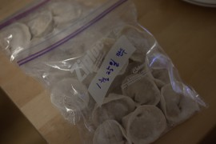
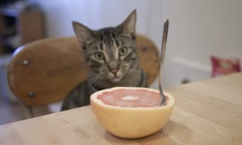
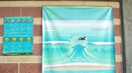

Home alone
Roon flew to Long Beach to attend a TED conference last Friday morning and I spent most of the weekend relaxing at home. I treated myself nicely on Sunday morning, with macaroons, three different colors and flavors.February 28, 2012 /
Home alone
Roon flew to Long Beach to attend a TED conference last Friday morning and I spent most of the weekend relaxing at home. I treated myself nicely on Sunday morning, with macaroons, three different colors and flavors.February 28, 2012 /


바쁜 일이 다 끝났다! 했더니 새해는 시작되었고 방학은 끝이 나고 봄 학기 시작. 지난해 마지막 날은, 구실만 있으면 모여서 시끄럽게 파티하고 노는 위층의 정신 나간 이십 대 이웃 여자애들의 비명에 가까운 환호와 함께 조용히(?) 집에서 보냈다. 이번 겨울은 길기도 참 길다. 요사이 맛 들린 ‘만두 빚기’에 계속 몰두하며 봄이 오길 [...]
February 12, 2012 /
Sundays are mine
Is it just me, or are the weeks getting shorter? This year has been a confusing one, also seems like passing by ever more quickly. I’ve been trying to leave Sundays for myself, but sometimes it’s not that simple. I blame some of that on a recent stressful work at School. Here’s a [...]November 21, 2011 /
Sundays are mine
Is it just me, or are the weeks getting shorter? This year has been a confusing one, also seems like passing by ever more quickly. I’ve been trying to leave Sundays for myself, but sometimes it’s not that simple. I blame some of that on a recent stressful work at School. Here’s a [...]November 21, 2011 /
For my cat
진도를 빼지 못하고 같은 자리만 빙빙 도는 11월. 마음에 드는 것이 하나도 없네.당장 우리 고양이 배낭에 넣고 아일랜드로 떠나 저 찌르레기떼를 같이 보고 돌아오면 우렁각시가 모든 일을 다 마무리시켜주지 않을까…November 11, 2011 /
For my cat
진도를 빼지 못하고 같은 자리만 빙빙 도는 11월. 마음에 드는 것이 하나도 없네.당장 우리 고양이 배낭에 넣고 아일랜드로 떠나 저 찌르레기떼를 같이 보고 돌아오면 우렁각시가 모든 일을 다 마무리시켜주지 않을까…November 11, 2011 /
추워요
제법 날씨가 쌀쌀해져 가더니 벌써 스웨터와 코트를 입어도 이상하지 않을 날씨가 되어버렸다. 여름이 가버린것에 적응하기도 전에, 또 금새 이렇게 되었다. 야속하기도 하지. 야속하기도 야속하다지만, 사실 일단 내가 피로하다. 주변사람들에게 종이로 만든 몸이라고 놀림을 당하는 나로서는, 추워서 몸을 있는 힘껏 웅크리고 다니다가 -그냥 웅크리는 것에 모든 근육의 힘을 다 써버리고- 집에 [...]October 27, 2011 /

What we ate last week, with curious Moony
Sometimes I wonder if my cat sees me as a cat, and I also suppose he might think me as a mother cat. Some people say that cats think they are human, but nobody knows exactly what this cat creature thinks. Roon once said that cats must be aliens. Moony always [...]October 27, 2011 /
What we ate last week, with curious Moony
Sometimes I wonder if my cat sees me as a cat, and I also suppose he might think me as a mother cat. Some people say that cats think they are human, but nobody knows exactly what this cat creature thinks. Roon once said that cats must be aliens. Moony always [...]October 27, 2011 /
심리적으로, 육체적으로
바쁘다.지난 2주 동안 너무 바빴고, 지난 주말은 또 그동안 바쁜 것을 몰아 쉬고/자고 하느라 바빴고, 이번 주도 지난주와 다르지 않다. 몇 년 동안 쉴 새 없이 바쁘게 살아온 남편을 보면서 어째 저렇게 세상 일 모두 다 혼자 지고 사는 것처럼 바쁜가 했던 적이 있었다. 하지만 이제는 그도 바쁘고 나도 바쁘니까, [...]October 18, 2011 /
심리적으로, 육체적으로
바쁘다.지난 2주 동안 너무 바빴고, 지난 주말은 또 그동안 바쁜 것을 몰아 쉬고/자고 하느라 바빴고, 이번 주도 지난주와 다르지 않다. 몇 년 동안 쉴 새 없이 바쁘게 살아온 남편을 보면서 어째 저렇게 세상 일 모두 다 혼자 지고 사는 것처럼 바쁜가 했던 적이 있었다. 하지만 이제는 그도 바쁘고 나도 바쁘니까, [...]October 18, 2011 /
It’s all reading and exhausting, recently.
And, of course, I’m not complaining about it.Here are some excerpts from the recent reading. Illich notes that today people ‘surrender themselves to atrocious debaucheries of images and representations in order not to see.’ In an age that denies death and deforms reality, simple acts of kindness, personal relations bound [...]September 18, 2011 /
It’s all reading and exhausting, recently.
And, of course, I’m not complaining about it.Here are some excerpts from the recent reading. Illich notes that today people ‘surrender themselves to atrocious debaucheries of images and representations in order not to see.’ In an age that denies death and deforms reality, simple acts of kindness, personal relations bound [...]September 18, 2011 /
추석 흉내
아직 지난 여름 방학의 생활 습관에서 빠져나오지 못 한 채 가을 학기의 첫주를 보내고 읽어야 할 책 리스트에 여섯 권 정도를 또 추가하고 나니 주말이 되었다. 그렇지 않아도 달팽이 기어가는 속도로 느리게 책을 읽는 나를 학교가 이렇게 함부로 대접해도 되는지에 대해 곰곰이 생각해보다가 다가오는 추석에 송편을 만들어 먹겠다던 내 철없는 [...]September 11, 2011 /
Last minute summer
My luxurious, relaxed, calm summer break is near to the end. Well, it is time to go back to the life of a grad-student that there is always too much to do, and not enough time to do it.September 4, 2011 /
Last minute summer
My luxurious, relaxed, calm summer break is near to the end. Well, it is time to go back to the life of a grad-student that there is always too much to do, and not enough time to do it.September 4, 2011 /
Recently
I’ve been thinking about things that I had sworn to myself I would never let me forget, things I thought I won’t ever be sorry for, and things I wished I would never believe. I just thought about them today.September 2, 2011 /
Book excerpts, the last couple of weeks
I decided to post some notes that I took from books I’ve been reading these days so that I understand what works for me, what doesn’t. [...]우리도 해방 후 미국식으로 사는 게 문명적인 방식이었으니까 아무 저항없이 따라가버렸잖아요. –김종철, 녹색평론 제111호 ‘먹고 입고만 하는 것이 사람이 아니라 배우고 알아야 사람이에요. 당신댁처럼 영감 [...]August 31, 2011 /
Book excerpts, the last couple of weeks
I decided to post some notes that I took from books I’ve been reading these days so that I understand what works for me, what doesn’t. [...]우리도 해방 후 미국식으로 사는 게 문명적인 방식이었으니까 아무 저항없이 따라가버렸잖아요. –김종철, 녹색평론 제111호 ‘먹고 입고만 하는 것이 사람이 아니라 배우고 알아야 사람이에요. 당신댁처럼 영감 [...]August 31, 2011 /
한국으로부터
영주권 신청하느라 필요한 서류 몇 개를 한국에서 부탁했더니, 귀여운 편지와 작은 선물이 함께 왔다. 이 안에는 지은이가 일본에서 사온 붕어빵 모양 수저받침이 들어있었다.나랑 함께 아침에 장을 보러 나갔을 때 집 앞에서 본 나팔꽃이 생각나 샀다는 엽서.참 곱구나.특히 연기 나는 모기향이 지은이랑 닮았다.폐차안내 봉투 안에 서류를 넣어 주신, 언제나 실용적이신, 멋있는 [...]August 30, 2011 /

딱딱한 복숭아 구조대작전/Canning peaches
Hurricane Irene did her thing yesterday night and today morning, fortunately the damage wasn’t bad as initially predicted. Me and my husband(and our cat) trapped inside our home, we did our laundry, floor mopping, dish washing and cooking. When we finished cleaning, we watched a disaster movie.August 28, 2011 /
딱딱한 복숭아 구조대작전/Canning peaches
Hurricane Irene did her thing yesterday night and today morning, fortunately the damage wasn’t bad as initially predicted. Me and my husband(and our cat) trapped inside our home, we did our laundry, floor mopping, dish washing and cooking. When we finished cleaning, we watched a disaster movie.August 28, 2011 /

Rainy day, please stay
I love rainy summer days. The smell of dust in the rain makes me feel like I’m in somewhere else that I’ve never been to, even if I’m sitting on the same old couch beside a window in my apartment.August 15, 2011 /
Rainy day, please stay
I love rainy summer days. The smell of dust in the rain makes me feel like I’m in somewhere else that I’ve never been to, even if I’m sitting on the same old couch beside a window in my apartment.August 15, 2011 /
소일거리
목욕하면서 진도가 잘 나가지 않는 책을 읽는 둥 마는 둥 하며 온통 물로 적셔놓는다든가, 부엌 식탁 의자와 의자 사이에 널어놓은 침대보 안에 들어가 낮잠을 자는 무늬를 툭툭 건드려 깨워보며 시간을 허비하고 싶은 월요일. 볕이 잘 드는 창 옆 소파에 앉아서 에어컨으로 몸을 식히면서 어제 한입 크기로 잘라놓은 수박을 냉장고에서 꺼내 [...]August 13, 2011 /


동생이 서울로 가고 여름도 서서히 간다. 화려하지도 지루하지도 않은 내 여름; 한국에서의 결혼, 로드 트립, 동생의 뉴욕 방문이 지나갔고, 월요일마다 가는 스페인어 수업과 골목마다 콸콸 틀어놓고 세차하는 아까운 소방수 낭비도 지나간다. 창밖으로 종종 부는 시원한 바람이 야속 할 만큼 행복하고 즐겁고 신이 났던 올해 여름이 그냥 이렇게 지나간다.매년 맞이하는 여름이니까 [...]
August 10, 2011 /
언제나
어려서부터 어지간히 동생과 애틋했다.부모님은 아침에 나가서 밤이 늦어서야 들어오셨으니까 정말 우리 둘밖에 없었고, 그래서 더 정다웠다. 서울에서 결혼식을 하고 미국으로 돌아오면서, 7월에 동생이 뉴욕에 와서 지내는 동안 가능한 유난떨지 말고 자연스럽게 평소처럼 보내야겠다고 생각했다. 예를 들면, 해 질 녘에 맥주 몇 캔 가지고 옥상에 올라가서 수다를 떨거나, 각자 볼일을 보고 만나 [...]August 6, 2011 /
여름 밤의 욕망
밤이다.유독 잠이 오질 않는 밤이다. 이루지 못하고 지나버린 내 사사로운 과거의 욕망들과, 앞으로 채워야할 그리고 채우고 싶은 또는 채워야만 하도록 등 떠밀려진 사회적/정치적 욕망들, 그리고 한때 내가 좋아하고 많은것을 나누었던 사람들이지만 지금은 남이 될수 밖에 없었던 사람들, 이 모든 것이 한꺼번에 머리속을 복잡하게 하니 잠을 잘 수가 없다. ‘모든 것이 [...]July 22, 2011 /

3인분의 식사를 준비하는 기분
매일 2인분의 식탁을 준비하다가 한 명 분을 더 만들게 되니까 뭔가 엄마의 마음이 된 것 같은 기분이 들었다. 두 명이 먹다가 세 명이 함께 먹으니까 잘 설명할 수 없는 느낌도 들었는데, 이제 와서 생각해보니 아마도 이게 가족과 함께 식사하는 느낌일지도 모르겠다고 생각했다.July 5, 2011 /
Vegas->Palm Springs->LA->San Diego
애리조나의 그랜드 캐년을 끝으로 우리는 공식적인 로드 트립을 마치고, 이미 행선지가 정해져 있고 호텔과 리조트가 예약되어 있는 여행 시작. 처음부터 이렇게 계획을 세웠지만, 만약 그렇지 않았더라도 당장 호텔을 잡자고 했을 만큼 우리는 많이 지쳐 있었다. 남편과 나는 공인된 늙은이의 체력을 가지고 있으니까. 일주일 동안의 단둘이 차로 그 넒은 곳을 헤매는 동안 [...]July 2, 2011 /
Vegas->Palm Springs->LA->San Diego
애리조나의 그랜드 캐년을 끝으로 우리는 공식적인 로드 트립을 마치고, 이미 행선지가 정해져 있고 호텔과 리조트가 예약되어 있는 여행 시작. 처음부터 이렇게 계획을 세웠지만, 만약 그렇지 않았더라도 당장 호텔을 잡자고 했을 만큼 우리는 많이 지쳐 있었다. 남편과 나는 공인된 늙은이의 체력을 가지고 있으니까. 일주일 동안의 단둘이 차로 그 넒은 곳을 헤매는 동안 [...]July 2, 2011 /
So much more to tell
We left a magical place of glistening white dunes and headed to Arizona. We have seen Santa Fe, White Sands and the endless plains of New Mexico. But wait, there’s more. The Very Large Array.Oh I would never forget you New Mexico, a very beautiful piece of the earth. I [...]July 2, 2011 /
So much more to tell
We left a magical place of glistening white dunes and headed to Arizona. We have seen Santa Fe, White Sands and the endless plains of New Mexico. But wait, there’s more. The Very Large Array.Oh I would never forget you New Mexico, a very beautiful piece of the earth. I [...]July 2, 2011 /

White Sands
도시 아이로 태어나서 언제나 시골 생활을 이유 없이 동경하며 대자연에 대한 갈망을 자연과 비슷한 그 무엇으로 채우고 자란 나로서는, 이번 여행이 과연 나를 어떤 길로 이끌 것인지 도무지 알 수가 없었다. 아무것도 모른 채 지금까지 대용품으로만 보았던 그 진짜 자연에 대한 기대감에 한껏 부풀어 여행을 떠났다. 볼 수만 있다면 빙하도 사막도 [...]July 2, 2011 /
White Sands
도시 아이로 태어나서 언제나 시골 생활을 이유 없이 동경하며 대자연에 대한 갈망을 자연과 비슷한 그 무엇으로 채우고 자란 나로서는, 이번 여행이 과연 나를 어떤 길로 이끌 것인지 도무지 알 수가 없었다. 아무것도 모른 채 지금까지 대용품으로만 보았던 그 진짜 자연에 대한 기대감에 한껏 부풀어 여행을 떠났다. 볼 수만 있다면 빙하도 사막도 [...]July 2, 2011 /